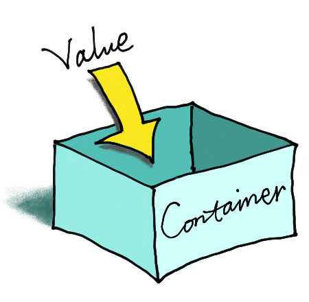
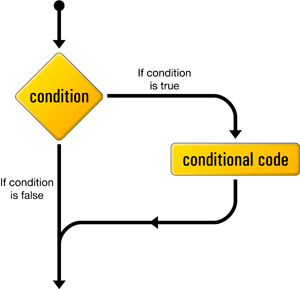

PHP Curriculum
Introduction
PHP is a really awesome language to learn either as a beginner or as an expert. When I initially began learning PHP, I felt lost and did not know where to begin. I hope this documentation will make your life profoundly easier and you will have fun as you enjoy the glory that is PHP.
At the end of this documentation you will be a ninja with the great power. Remember with great power comes great responsibility. Enjoy :-)
Basic PHP Syntax
Below is just an appetiser so that you know the basics.
Ok let's begin with the absolute basic piece of information. The default file extension for PHP files is ".php".
A PHP script can be placed anywhere in the .php file. Below is an example
<?php
/**
* PHP code goes here
*/
echo "This stuff doesn't seem soooo difficult, right?";
Echo
"So how do you output to a browser?"
To display anything on the browser.
echo "This is cool";
echo 'Huh! So you can also use a single quotation mark. Intersting.';
echo ("This is also cool");
"Awesome. Quick question whats the difference between having "" in echo vs '' ?"
The main differnce between using "" and '' when dealing with echo is fairly simple.
$age = 10;
echo "I have always taken desert after supper since I was $age years old."
// The output will be:- I have always taken desert after supper since I was 10 years old.
To achieve the same results using '' one would have to do the following
echo 'I have always taken desert after supper since I was' . $age . 'years old.'
This is called concatenating. This basically means add to the sentence $age.
// This is still ok
echo "I have always taken desert after supper since I was" . $age . "years old."
Comments in PHP
"How can I leave myself or future coders information about what a specific piece of code is supposed to do?"
To achieve this you comment about that piece of code. An example is shown above. Another example can be found below. There are many ways of commenting.
<?php
// This is a single-line comment
# This is also a single-line comment
/* *
* This is a multiple-lines comment block
* that spans over multiple
* lines
*/
Variables
They are used to store information. To proper understand what variables are think of them as boxes in which the information is placed inside of them.

When the stored information is needed back it can be retrieved.

"Cool, so what do I need to know about variables?"
Here are the most important things to know about variables in PHP.
-
They are denoted by a dollar sign ($)
$variable = 3; -
Variables can be declared before they are assigned some information
-
Variables are assigned values using the equal (=) sign as shown above
-
The value of the most recent variable overides that of the previous
$variable = 3; $variable = 5; echo $variable; // You will see 5 -
Suppose the variable name consists of two or more words eg school books, in PHP best practice dictates that we write such a variable as follows :-
$school_books = ['Math Book', 'Science Book'];As you can see above we separate the two words making the variable name with an underscore
"Huh! are there different types of variables?"
As a matter of fact, yes. PHP supports the following data types.
-
Integers − These whole numbers, without a decimal point, eg. 4195. They can be either positive or negative. Integers can be specified in three formats: decimal (10-based), hexadecimal (16-based - prefixed with 0x) or octal (8-based - prefixed with 0)
-
Doubles − These are decimal point numbers eg. 3.14159 or 49.0
-
Booleans − Can either be true or false
-
NULL − This is a very special type that only has one value ie. NULL
-
Strings − These are sequences of characters, take for instance 'The value of pie is 3.142'
-
Arrays − These are named and indexed collections of other values
-
Objects − These data type stores data and information on how to process that data. They must be explicitly declared.
-
Resources − These are special variables that hold references to resources external to PHP (such as database connections).
"Well Jeez! Some of these data types sound complex. How will I get to understand them?"
We will go though each and every one of these data types, breaking down doors until you have mastered each.
Arrays
"So, what is an array?"
To best understand what arrays are and how to use them let's look at a simple example.
<?php
// Suppose you want to store the days of the week this could be represented as
$day1 = 'Monday';
$day2 = 'Tuesday';
$day3 = 'Wednesday';
$day4 = 'Thursday';
$day5 = 'Friday';
$day6 = 'Saturday';
$day7 = 'Sunday';
// This is could work, but there is a more efficient way
$days = ['Monday', 'Tuesday', 'Wednesday', 'Thursday', 'Friday', 'Saturday', 'Sunday'];
// $days is an array variable.
As you can see above declaring the days of the week as an array is more efficient.
"Huh! Now that I understand what an array is, how can I access the elements of the array?"
To best understand how to access the array elements, let's continue with the above
<?php
// Suppose you want to store the days of the week this could be represented as
$day1 = 'Monday';
$day2 = 'Tuesday';
$day3 = 'Wednesday';
$day4 = 'Thursday';
$day5 = 'Friday';
$day6 = 'Saturday';
$day7 = 'Sunday';
// This is could work, but there is a more efficient way
// $days is an array variable.
$days = ['Monday', 'Tuesday', 'Wednesday', 'Thursday', 'Friday', 'Saturday', 'Sunday'];
// To display the array elements you can either use print_r() or var_dump()
var_dump($days);
/**
* The output for var_dump will be
* array(7) {
* [0]=>
* string(6) "Monday"
* [1]=>
* string(7) "Tuesday"
* [2]=>
* string(9) "Wednesday"
* [3]=>
* string(8) "Thursday"
* [4]=>
* string(6) "Friday"
* [5]=>
* string(8) "Saturday"
* [6]=>
* string(6) "Sunday"
* }
*/
print_r($days)
/**
* The output will be
* Array
* (
* [0] => Monday
* [1] => Tuesday
* [2] => Wednesday
* [3] => Thursday
* [4] => Friday
* [5] => Saturday
* [6] => Sunday
* )
*/
/**
* As you can see above the dates are indexed starting from zero ie Monday is
* indexed 0 and Sunday is indexed 6
*/
// To dispay Wednesday
echo $days[2]; // Outputs Wednesday
Let's dissect the result obtainined above when we do print_r($days)
[0], [1], [2] etc seen above are called the keys while Monday, Tuesday etc are called the values
"What if I don't want to have those horibble keys and want to customize my keys can I be able to do so?"
As a matter of fact, yes. We call that type of array an associative array.
Imagine you have a list of employees and you want to keep track of how old they are
<?php
$employee = [
"Samuel" => "35 years",
"Bonny" => "25 years",
"Clyde" => "20 years",
];
echo $employee["Clyde"]; // Outputs 20 years
"Awesome. Now that I get what arrays are and how to use get information from them can I do anything else with them say, add and remove items in the array?"
Yes. Below is an example of how to add an element into an array.
<?php
// Let's use the days of the week example
$days = ["Monday", "Tuesday", "Wednesday", "Thursday", "Friday", "Saturday"];
/**
* To add Sunday we use array_push() which accepts two values ie the name of
* the array and the value you intend to add
*/
array_push($days, "Sunday");
// Alternatively to add Sunday we can also use
$days[] = "Sunday";
// To see if Sunday has been added
print_r($days);
/**
* The output is
* Array
* (
* [0] => Monday
* [1] => Tuesday
* [2] => Wednesday
* [3] => Thursday
* [4] => Friday
* [5] => Saturday
* [6] => Sunday
* )
*
*/
Now to remove the last item that we have added in the days of the week ie Sunday we use array_pop
<?php
// Let's use the days of the week example
$days = ['Monday', 'Tuesday', 'Wednesday', 'Thursday', 'Friday', 'Saturday', 'Sunday'];
array_pop($days);
print_r($days);
/**
* The output is
* Array
* (
* [0] => Monday
* [1] => Tuesday
* [2] => Wednesday
* [3] => Thursday
* [4] => Friday
* [5] => Saturday
* )
*
*/
Ok, some of you might be like "But Sunday is the first day of the week not Monday how can I reflect that?"
That's easy
<?php
// Let's declaire the days of the week
$days = ['Monday', 'Tuesday', 'Wednesday', 'Thursday', 'Friday', 'Saturday'];
array_unshift($days, "Sunday");
print_r($days);
/**
* Array
* (
* [0] => Sunday
* [1] => Monday
* [2] => Tuesday
* [3] => Wednesday
* [4] => Thursday
* [5] => Friday
* [6] => Saturday
* )
*
*/
Depending on your needs there are so many array functions that you may want to use.For a comprehensive list of said functions go to php.net
Conditions
We as humans make decisions every day. Do I wake up or sleep in? Do I buy this or that etc. Computers also have that ability. PHP uses if, elseif and switch statements to make to fulfil this task.

If statements
<?php
$day = "Friday";
if($day == "Friday") {
echo "Yipee tomorrow I sleep in.";
} else {
echo "Noooooo tomorrow I have to wake up early";
}
// Output will be Yipee tomorrow I sleep in.
"What! why are we using two == signs?"
Great observation. We use one = sign to assign values to a variable and == or === signs in if statements.
"So what it the diferrence between == and === sign?"
To best explain this let's look at an example
<?php
$day = "Friday";
if($day == true) {
echo "Yipee tomorrow I sleep in.";
} else {
echo "Noooooo tomorrow I have to wake up early";
}
// Output will be Yipee tomorrow I sleep in.
<?php
$day = "Friday";
if($day === "Friday") {
echo "Yipee tomorrow I sleep in.";
} else {
echo "Noooooo tomorrow I have to wake up early";
}
// Output will be Yipee tomorrow I sleep in.
"Say whaaaat?"
Ok, so this may be a little bit confusing but trust me its not. In the first case the == sign does not check the datatype it check if its a truthy value. Since $dayis not equal to an empty string, it does have values then it's a truthy value.
Three equal signs ie === is used when you want to be as explicit as possible.
Elseif
As you have seen above you use if statement when you have to make a deceision between two things but what if you have not one ,not two but many decisions to make, then you use elseif for that
<?php
$day = "Friday";
if ($day === "Friday") {
echo "Have a nice weekend!";
} elseif ($d === "Sun") {
echo "Have a nice Sunday!";
} else {
echo "Have a nice day!";
}
// Output is Have a nice weekend!
Please note that you can change the === with <= , >= , < or >
$value1 <= $value2 means $value1 is less or equal to $value2
$value1 < $value2 means $value1 is less than $value2
$value1 >= $value2 means $value1 is greater or equal to $value2
$value1 > $value2 means $value1 is greater than $value2
For a comprehensive list of operators go to php.net
Elseif
To best expain these let's look at some code
<?php
$day = "Sunday";
switch($day) {
case "Monday":
echo "It's Monday";
break;
case "Tuesday":
echo "It's Tuesday";
break;
case "Wednesday":
echo "It's Wednesday";
break;
case "Thursday":
echo "It's Thursday";
break;
case "Friday":
echo "It's Friday";
break;
default:
echo "Hurray it's the weekend!";
}
// Outputs hurray it's the weekend